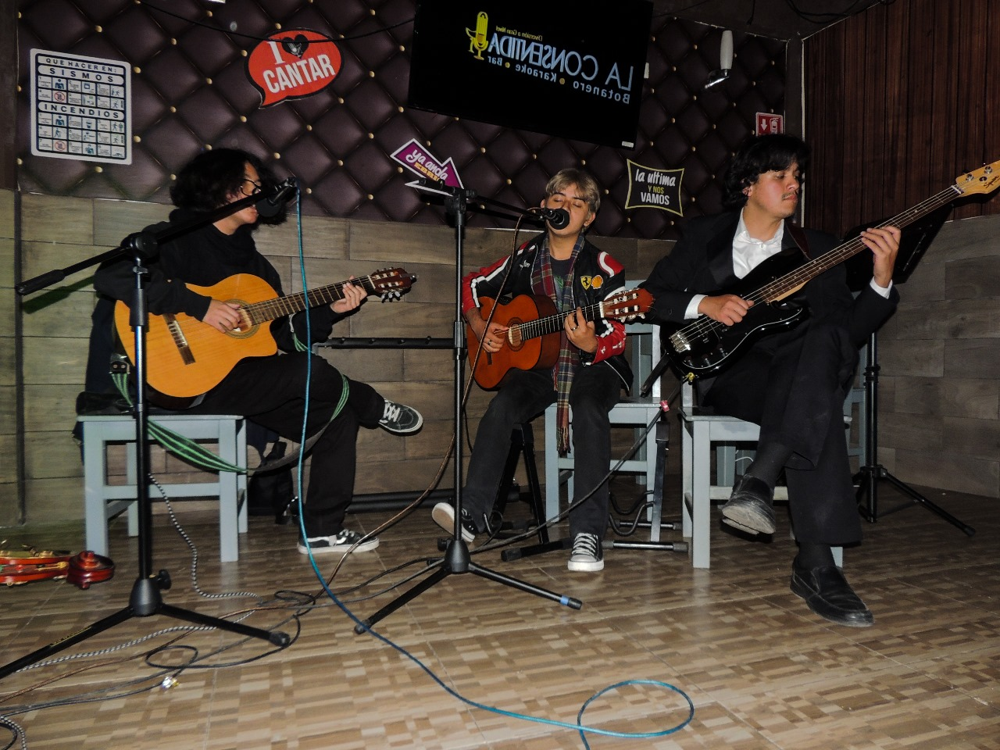
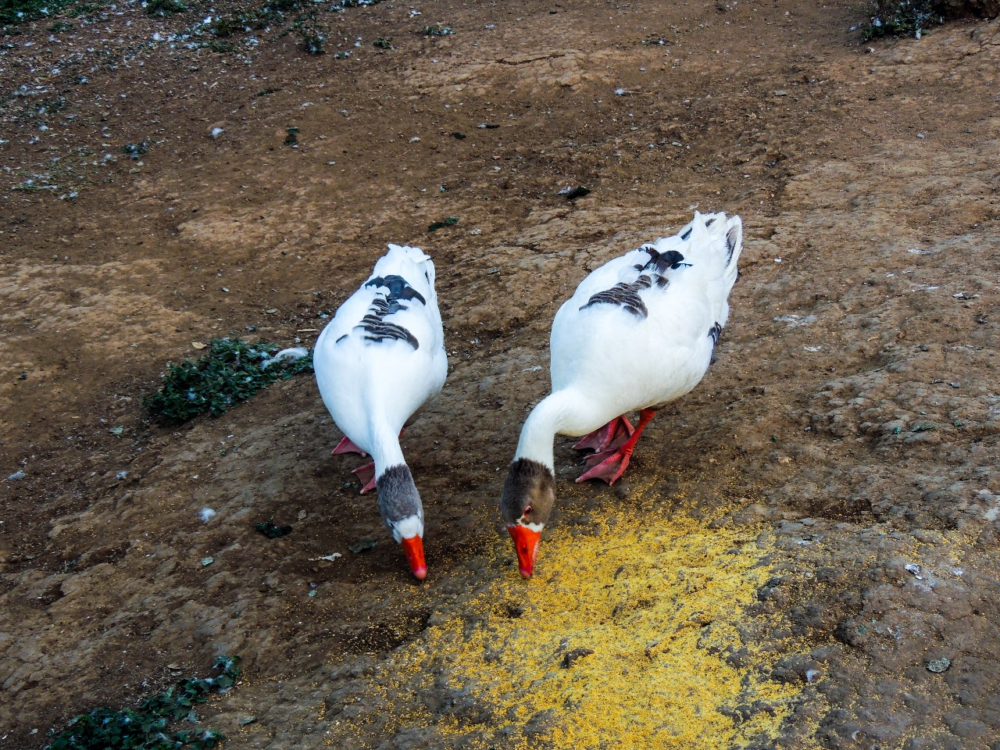
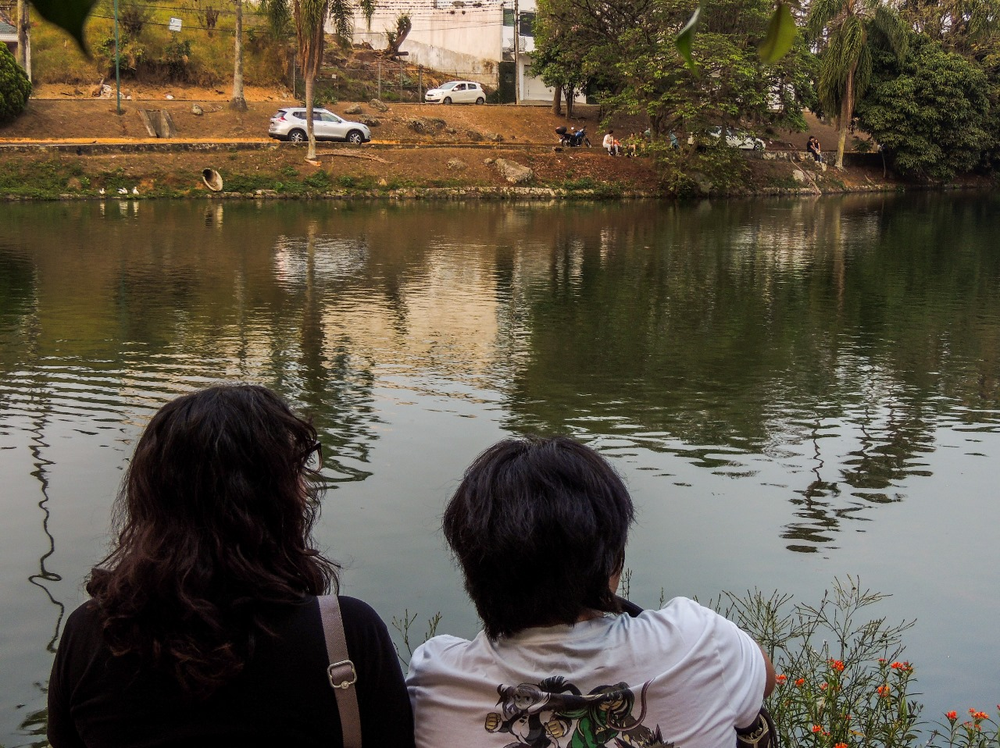
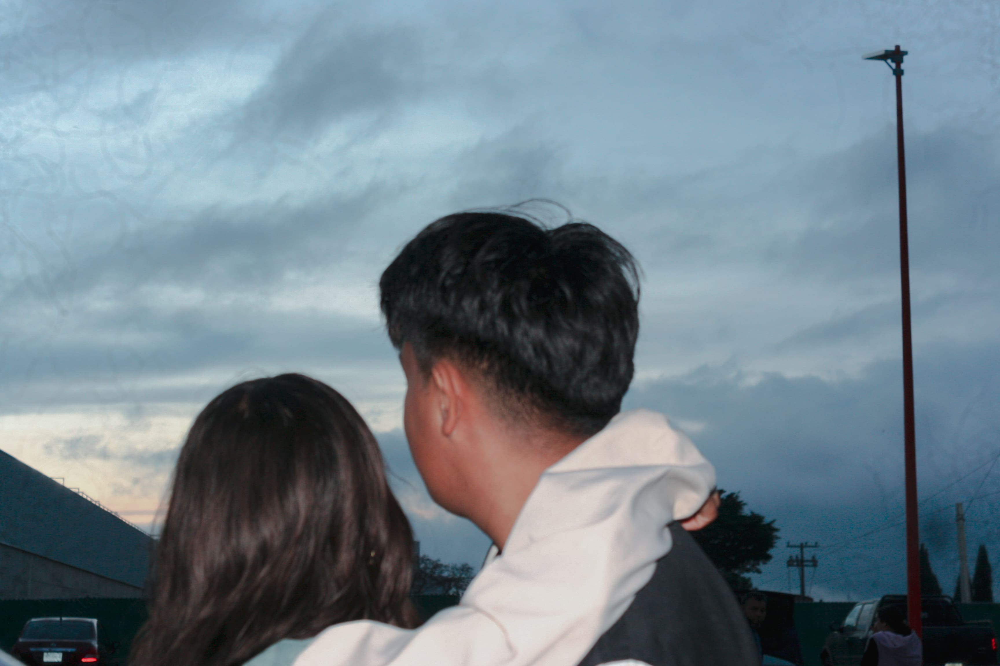
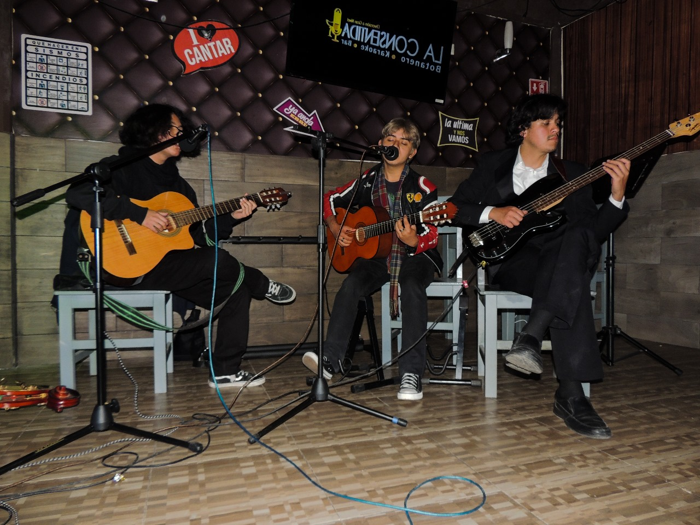
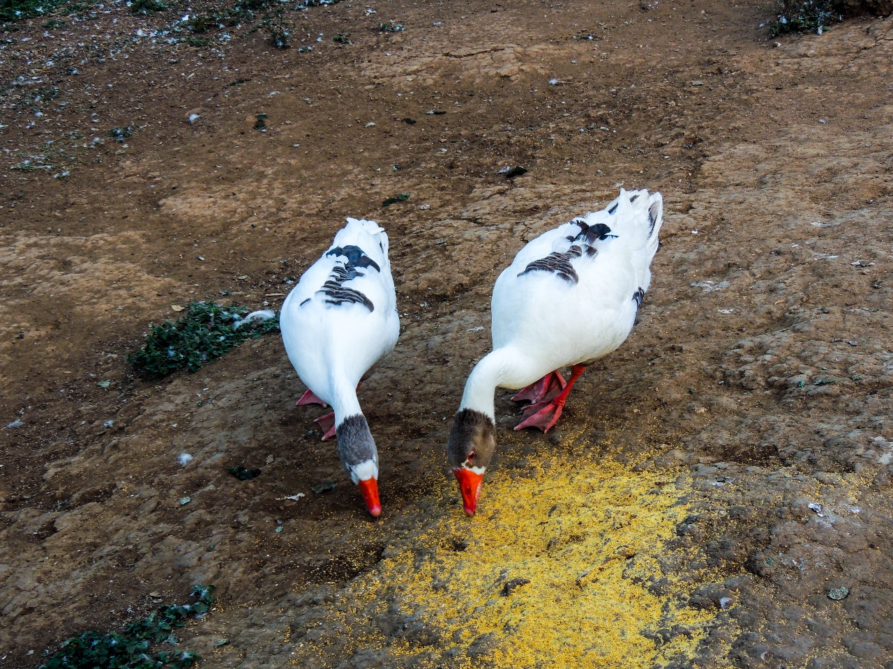
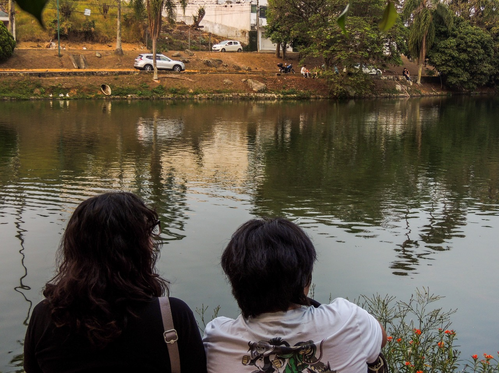
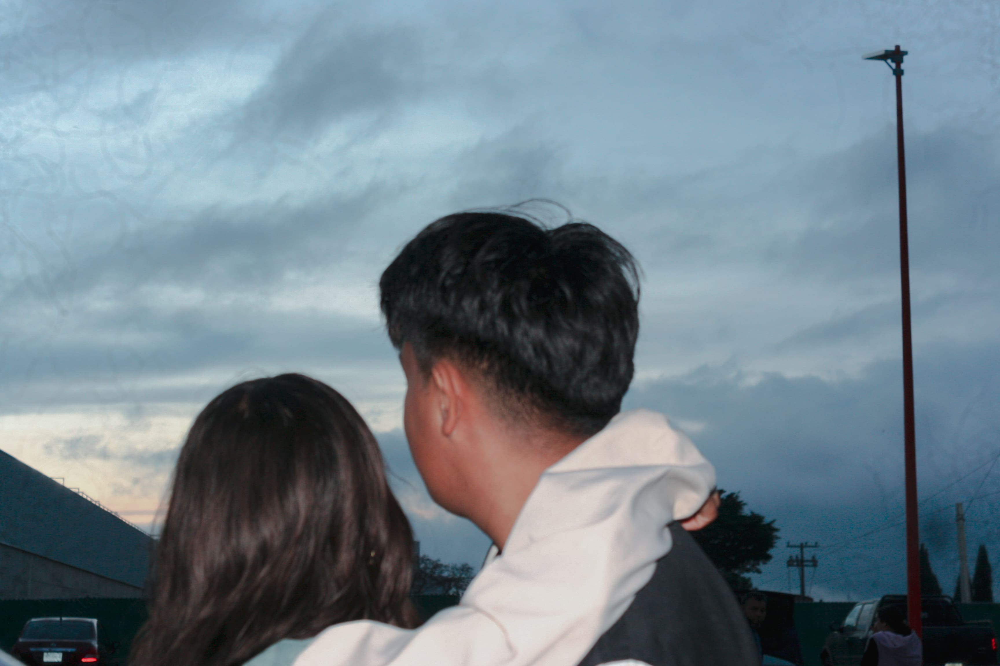

Proyectos de fotografía
Me gusta mucho plasmar la esencia de una persona, objeto o ser vivo, en cada fotografía.
La naturaleza, sus paisajes asi como, un buen modelo pueden crear una conexion y plasmarla en una gran foto.
   Me gusta mucho plasmar la esencia de una persona, objeto o ser vivo, en cada fotografía.
La naturaleza, sus paisajes asi como, un buen modelo pueden crear una conexion y plasmarla en una gran foto.
   